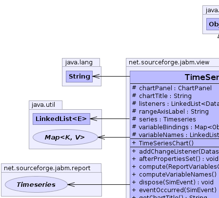
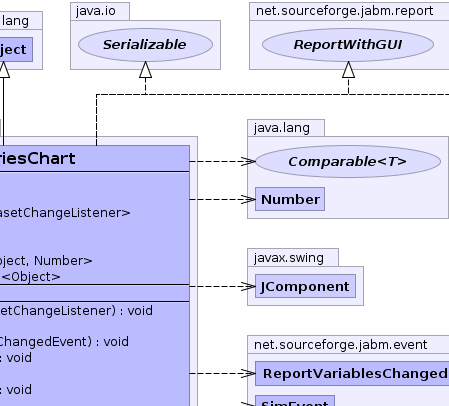
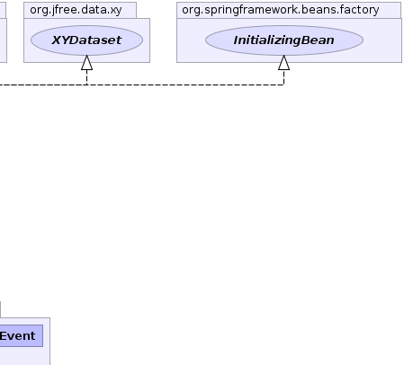
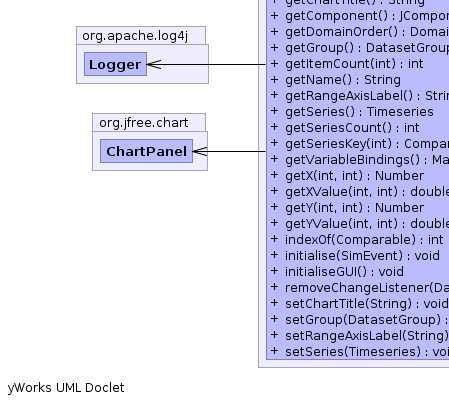

net.sourceforge.jabm.view
Class TimeSeriesChart
java.lang.Object
 net.sourceforge.jabm.view.TimeSeriesChart
net.sourceforge.jabm.view.TimeSeriesChart
- All Implemented Interfaces:
- java.io.Serializable, EventListener, Report, ReportWithGUI, org.jfree.data.general.Dataset, org.jfree.data.general.SeriesDataset, org.jfree.data.xy.XYDataset, org.springframework.beans.factory.InitializingBean
public class TimeSeriesChart
- extends java.lang.Object
- implements org.jfree.data.xy.XYDataset, ReportWithGUI, java.io.Serializable, org.springframework.beans.factory.InitializingBean
A graphical report that renders an underlying time series (Timeseries
) as a JFreeChart time series chart. This report listens for events from
the underlying Timeseries object and notifies its chart whenever the series
is updated.
- See Also:
- Serialized Form
-
-
|  |
 |
 |
|  |
 |
|
|
Field Summary |
protected org.jfree.chart.ChartPanel |
chartPanel
The JFreeChart ChartPanel which contains the actual swing component
for the chart. |
protected java.lang.String |
chartTitle
|
protected java.util.LinkedList<org.jfree.data.general.DatasetChangeListener> |
listeners
|
protected java.lang.String |
rangeAxisLabel
|
protected Timeseries |
series
The underlying time series which is the model for our chart. |
protected java.util.Map<java.lang.Object,java.lang.Number> |
variableBindings
|
protected java.util.LinkedList<java.lang.Object> |
variableNames
|
| Methods inherited from class java.lang.Object |
clone, equals, finalize, getClass, hashCode, notify, notifyAll, toString, wait, wait, wait |
series
protected Timeseries series
- The underlying time series which is the model for our chart.
variableBindings
protected java.util.Map<java.lang.Object,java.lang.Number> variableBindings
variableNames
protected java.util.LinkedList<java.lang.Object> variableNames
listeners
protected java.util.LinkedList<org.jfree.data.general.DatasetChangeListener> listeners
chartTitle
protected java.lang.String chartTitle
rangeAxisLabel
protected java.lang.String rangeAxisLabel
chartPanel
protected org.jfree.chart.ChartPanel chartPanel
- The JFreeChart ChartPanel which contains the actual swing component
for the chart.
TimeSeriesChart
public TimeSeriesChart()
throws java.awt.HeadlessException
- Throws:
java.awt.HeadlessException
afterPropertiesSet
public void afterPropertiesSet()
- Specified by:
afterPropertiesSet in interface org.springframework.beans.factory.InitializingBean
initialiseGUI
public void initialiseGUI()
getVariableBindings
public java.util.Map<java.lang.Object,java.lang.Number> getVariableBindings()
- Description copied from interface:
Report
- Get the values calculated by this report.
- Specified by:
getVariableBindings in interface Report
- Returns:
- A
Map of user-readable variable names to their
associated values.
computeVariableNames
public void computeVariableNames()
compute
public void compute(ReportVariablesChangedEvent event)
- When this report is computed it notifies its listeners (typically
the JFreeChart swing component) that its data set has changed.
dispose
public void dispose(SimEvent event)
initialise
public void initialise(SimEvent event)
getSeriesCount
public int getSeriesCount()
- Specified by:
getSeriesCount in interface org.jfree.data.general.SeriesDataset
getSeriesKey
public java.lang.Comparable getSeriesKey(int seriesIndex)
- Specified by:
getSeriesKey in interface org.jfree.data.general.SeriesDataset
indexOf
public int indexOf(java.lang.Comparable seriesKey)
- Specified by:
indexOf in interface org.jfree.data.general.SeriesDataset
getGroup
public org.jfree.data.general.DatasetGroup getGroup()
- Specified by:
getGroup in interface org.jfree.data.general.Dataset
addChangeListener
public void addChangeListener(org.jfree.data.general.DatasetChangeListener arg0)
- Specified by:
addChangeListener in interface org.jfree.data.general.Dataset
removeChangeListener
public void removeChangeListener(org.jfree.data.general.DatasetChangeListener arg0)
- Specified by:
removeChangeListener in interface org.jfree.data.general.Dataset
setGroup
public void setGroup(org.jfree.data.general.DatasetGroup arg0)
- Specified by:
setGroup in interface org.jfree.data.general.Dataset
getDomainOrder
public org.jfree.data.DomainOrder getDomainOrder()
- Specified by:
getDomainOrder in interface org.jfree.data.xy.XYDataset
getItemCount
public int getItemCount(int seriesIndex)
- Specified by:
getItemCount in interface org.jfree.data.xy.XYDataset
getX
public java.lang.Number getX(int seriesIndex,
int itemIndex)
- Specified by:
getX in interface org.jfree.data.xy.XYDataset
getXValue
public double getXValue(int seriesIndex,
int itemIndex)
- Specified by:
getXValue in interface org.jfree.data.xy.XYDataset
getY
public java.lang.Number getY(int seriesIndex,
int itemIndex)
- Specified by:
getY in interface org.jfree.data.xy.XYDataset
getYValue
public double getYValue(int seriesIndex,
int itemIndex)
- Specified by:
getYValue in interface org.jfree.data.xy.XYDataset
eventOccurred
public void eventOccurred(SimEvent event)
- Specified by:
eventOccurred in interface EventListener
getSeries
public Timeseries getSeries()
setSeries
public void setSeries(Timeseries series)
getChartTitle
public java.lang.String getChartTitle()
setChartTitle
public void setChartTitle(java.lang.String chartTitle)
getRangeAxisLabel
public java.lang.String getRangeAxisLabel()
setRangeAxisLabel
public void setRangeAxisLabel(java.lang.String rangeAxisLabel)
getName
public java.lang.String getName()
- Specified by:
getName in interface Report
getComponent
public javax.swing.JComponent getComponent()
- Specified by:
getComponent in interface ReportWithGUI